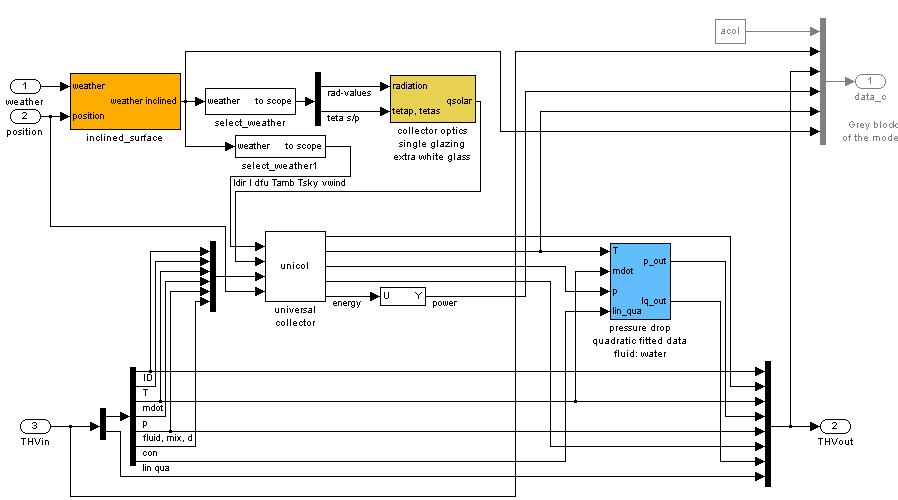
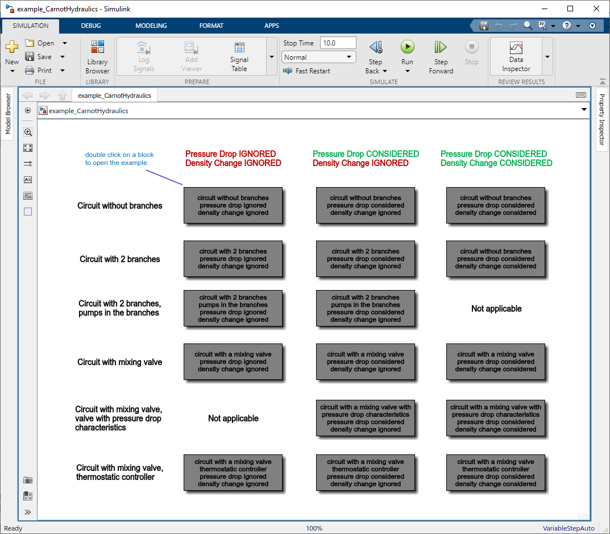
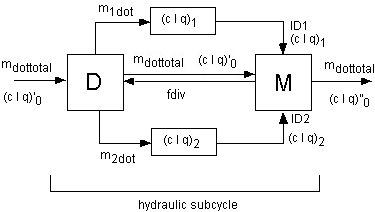

2.1 CARNOT Vector Definitions
2.1.1 Thermo Hydraulic Bus (THB)
2.1.2 Electric Bus (EB)
2.1.3 Weather Data Bus (WDB)
2.1.4 Fuel Vector
2.1.5 The Eco Vector
2.1.6 The Building Vectors
2.2 Specifying Components from the Subsystem
2.3 Utility Functions
2.3.1 Material property functions
2.3.2 Other utility functions
2.4 Pressure Drop and Massflow Calculation
2.4.1 Basic equation
2.4.2 Calculations without pressure drop
2.4.3 Pumps and components with pressure drops in a cycle
2.4.4 Cycles with influence of static height
2.4.5 Pressure drop for components in series
2.4.6 Pressure drop for components in parallel
2.5 List of useful open source tools
2.5.1 PVLIB Toolbox
2.4.1 Coolprop (refrigerant properties)
In this chapter some important changes to the conventional use of Libraries for MATLAB SIMULINK are presented. At the same time some of the model concepts and calculation methods are explained, because they also have an effect of the creation of the models.
The Thermo-Hydraulic Bus (THB) is the common data structure
of the CARNOT Toolbox. In old versions of Carnot, the Thermo-Hydraulic Vector (THV) was used.
In spite of the fact that it should not be used any more, it is described here, because it might be found in old models.
The THB contains all the necessary information about the flow and the energy
transfer associated with it. In the blocks where the Thermo-Hydraulic Bus
is split up, the calculations are carried out in the block and afterwards, the
THB is reassembled with the processed values.
Each THB corresponds to a physical pipe connection between components. The information
is only transported by the vector, whereas the calculation is performed inside
the blocks.
Components are connected using the THB. Each block must have at least one entry
for a THB, otherwise the block would not have any effect on the state of the
flow.
The THB is defined in the file THB.mat. It has 12 components. The advantage compared to a vector is that each bus
element has it's own name. In Simulink the single data can be accessed via a bus selector block, in Matlab
the bus can be used as a structure.
The structure of the Thermo-Hydraulic Bus is shown in the following table.
THB - bus definition
| No. | name in the bus | description | abbreviation | physical unit | remarks |
| 1 | ID | flow identifier | ID | none | is set by the simulation, not by the user |
| 2 | Temperature | temperature | T | °C | |
| 3 | MassFlow | massflow | m dot | kg/s | |
| 4 | Pressure | pressure | p | Pa | |
| 5 | FluidType | fluid type | Fluid_ID | none | is set in the pump |
| 6 | FluidMix | mixture of fluid (fraction of 2nd mixture component | fluid_mix | depends on fluid_type | is set in the pump |
| 7 | FluidMix2 | mixture of fluid (3rd mixture component) | fluid_mix2 | depends on fluid type | |
| 8 | FluidMix3 | mixture of fluid (4rd mixture component) | fluid_mix3 | depends on fluid type | |
| 9 | DiameterLastPiece | diameter last piece | d_last | m | |
| 10 | DPConstant | constant coefficient of pressure drop | Pa | ||
| 11 | DPLinear | linear coefficient of pressure drop | [Pa s/kg] | ||
| 10 | DPQuadratic | quadratic coefficient of pressure drop | [Pa s2 /kg2] | ||
| 11 | HydraulicInductance | hydraulic inductance | 1/m | ||
| 12 | GeodeticHeight | geodetic height | m |
The structure of the old THV is described in the following table. The vector consists of the first 10 elements of the THB and additional 10 elements, which were designated for enhancements. Normally, the last 10 elements were set to zero.
THV - thermo hydraulic vector definition
| No. | description | abbreviation | physical unit | remarks |
| 1 | flow identifier | ID | none | is set by the simulation, not by the user |
| 2 | temperature | T | [°C] | |
| 3 | massflow | mdot | [kg/s] | |
| 4 | pressure | p | [Pa] | |
| 5 | fluid type | fluid_ID | none | is set in the pump |
| 6 | mixture of fluid | fluid_mix | [0..1] | is set in the pump |
| 7 | diameter last piece | d_last | [m] | |
| 8 | constant coefficient of pressure drop | c | [Pa] | |
| 9 | linear coefficient of pressure drop | l | [Pa s/kg] | |
| 10 | quadratic coefficient of pressure drop | q | [Pa s2/kg2] | |
| 11 | not used | |||
| to | ... | |||
| 20 | not used |
NOTE: Physical units in CARNOT are conform to SI, the international standard. (One small difference is the temperature, which is given in degree Celsius and not in Kelvin.)
NOTE: Since the THB can be changed in the file THB.mat, a THB should not be created by a Simulink bus creator block. Please use a bus assignment block to change values of a THB or the THBCreator block to create a THB. If the THB is changed, there is no need to alter almost every block in Carnot.
Connected to the THB other definitions are made for the description of the fluid characteristics :
The flow_id is used for the hydraulic calculation of the fluid. For example, in the case of a closed valve, the flow_ID is set to a negative value, so that the calculating element (e.g. the mixer) knows that there is no mass flow through this branch (see " pressure drop calculation "). Another use of the flow_ID is to control the pressure drop calculation. So
| if | then |
| flow_ID < 0 | no massflow through the branch (e.g a closed valve is contained in the branch) |
| 0 < flow_ID < 10000 | no pressure calculation is carried out |
| 10000 < flow_ID < 20000 | only pressure drop is calculated |
| 20000 < flow_ID | pressure drop and static pressure are calculated |
| fluid_ID | fluid | in FluidEnum | in carlib.h | remarks |
| 1 | water | WATER | WATER | water, fluid mix is the vapour content in the 2-phase region |
| 2 | air | AIR | AIR | fluid mix gives the kg water /kg air, i.e. the absolute fraction of water |
| 3 | cotton oil | COTOIL | COTOIL | |
| 4 | silicon oil | SILOIL | SILOIL | |
| 5 | water-glycol | WATERGLYCOL | WATERGLYCOL | fluid mix gives the volume percentage of propylen glycol the properties are for Tyfocor L, Tyforop Hamburg |
| 6 | Tyfocor LS | TYFOCOR_LS | TYFOCOR_LS | fluid mix is the vapour content |
| 7 | water | WATER_CONSTANT | WATER_CONSTANT | constant properties for liquid water at 20°C |
| 8 | air | AIR_CONSTANT | AIR_CONSTANT | constant properties for air at 20°C |
Utilisation of the fluid_ID in the material property functions :
Some fluid functions calculate different things depending on the fluid_ID specified,
in particular the functions vapourpressure and saturationtemperature. In the
case of water (fluid_ID 1) the function
In the case of air (fluid_ID = 2 "air") the function :
The fluid_ID can be accessed via enumerations in Matlab/Simulink and C. They are defined in FluidEnum.m and carlib.h, respectively. Please consider that enumerations are of type integer, whereas in Carnot double types are used.
To output and visualise a specific physical value from the Thermo-Hydraulic-Bus use a Simulink bus selector or the Display_THB blocks in CARNOT.
Definition of the property types
In some functions concerning the fluid properties, for example the saturationproperty, a property for which the calculation is performed, has to be defined. This is done by specifying the property_ID according to the following table.
| Property_ID | Property | in PropertyEnum | in carlib.h |
| 1 | density | DENSITY | DENSITY |
| 2 | heat_capacity | HEAT_CAPACITY | HEAT_CAPACITY |
| 3 | thermal_conductivity | THERMAL_CONDUCTIVITY | THERMAL_CONDUCTIVITY |
| 4 | kinematic_viscosity | KINEMATIC_VISCOSITY | KINEMATIC_VISCOSITY |
| 5 | enthalpy | ENTHALPY | ENTHALPY |
| 6 | entropy | ENTROPY | ENTROPY |
| 7 | prandtl | PRANDTL | PRANDTL |
| 8 | specific_volume | SPECIFIC_VOLUME | SPECIFIC_VOLUME |
| 9 | evaporation_enthalpy | EVAPORATION_ENTHALPY | EVAPORATION_ENTHALPY |
| 10 | vapourpressure | VAPOURPRESSURE | VAPOURPRESSURE |
| 11 | saturationtemperature | SATURATIONTEMPERATURE | SATURATIONTEMPERATURE |
| 12 | saturationproperty | SATURATIONPROPERTY | SATURATIONPROPERTY |
| 13 | temperature conductivity | TEMPERATURE_CONDUCTIVITY | TEMPERATURE_CONDUCTIVITY |
| 14 | enthalpy2temperature | ENTHALPY2TEMPERATURE | ENTHALPY2TEMPERATURE |
| 15 | grashof | GRASHOFNUMBER | GRASHOFNUMBER |
| 16 | prandtl | PRANDTLNUMBER | PRANDTLNUMBER |
| 17 | vapourcontent | VAPOURCONTENT | VAPOURCONTENT |
Moreover in the case of the saturation value of the respective property, the fluid phase has to be set as well. This is done by defining the phase_ID according to the following table.
| phase_ID | phase | in PhaseEnum | in carlib.h |
| 1 | vaporous | VAPOROUS | VAPOROUS |
| 2 | liquid | LIQUID | LIQUID |
| 3 | solid | SOLID | SOLID |
The phase_ID is specified in the same way as the other IDs like the fluid type or the property_ID .
The Electric Bus (EB) is the common data structur for electric systems. It can be used to calculate energy demand, controller design and detailed modelling of
electric sources and loads.
The ID of the EB can be used to eliminate errors due to conenections with imcompatible electric energy types
(f.e. AC sources driving DC devices). This kind of error handling is no automatic process, instead has to considered by the designer of a new model.
Since the Bus structure won't be modified by the electric ID, the user is responsible to select the correct bus signals according to the electric ID
(f.e. there is no physical interpretation for Voltage2 in DC-Signals).
The structure of the Electric Bus is shown in the following table:
Electric Bus definition
| No. | description | abbreviation | physical unit | remarks |
| 1 | electric identifier | ID | none | |
| 2 | frequency | Freq | [Hz] | |
| 3 | voltage line 1 | Voltage1 | [V] | voltage line 1 to ground |
| 4 | active power line 1 | ActPower1 | [W] | |
| 5 | power factor line 1 | PowerFactor1 | [1] | |
| 6 | voltage line 2 | Voltage2 | [V] | voltage line 2 to ground |
| 7 | active power line 2 | ActPower2 | [W] | |
| 8 | power factor line 2 | PowerFactor2 | [1] | |
| 9 | voltage line 3 | Voltage3 | [V] | voltage line 3 to ground |
| 10 | active power line 3 | ActPower3 | [W] | |
| 11 | power factor line 3 | PowerFactor3 | [1] |
All Voltages are assumed to be measured against ground.
The electric_ID
The Elecric ID is used to determine the type of electric energy transmission.
| No. | description | abbreviation | remarks |
| 1 | Power | ID | only power, no extra information |
| 2 | DC | DC | only data for Line 1 are used, Freq1 = 0 |
| 3 | AC 1 phase | AC_1P | only data for Line 1 are used |
| 4 | AC 3 phase | AC_3P | all Bus elements are used |
The electric_ID can be accessed via enumerations in Matlab/Simulink and C. They are defined in ElectricEnum.m and carlib.h, respectively. Please consider that enumerations are of type integer, whereas in Carnot double types are used.
The weather data bus contains the weather conditions for the calculation period.
It is calculated from measurements over a long period of time. Averaged data
of monthly measurements are pre-processed discretely to generate hourly values
of the relevant weather data. Correlations for the temperature, the radiation,
the relative humidity and the wind speed are used to generate the hourly values.
The weather data is specified in a certain format (see also "wformat.m")
Each row contains a dataset for a specific time. Column limiter is a tabulator or a space.
Information on the dataset
station name: country:
geographical position: longitude: , latitude:
reference meridian for time (example: 0° = Greenwich Mean Time):
mark type of data collection: measured/calculated/satellite
| Column | description | units |
| 1 | time | [s] |
| 2 | timevalue (comment line) format YYYYMMDDHH Y is the year, M the month, D the day, H the hour | [-] |
| 3 | zenith angle of sun (at time, not averaged) (continue at night to get time of sunrise by linear interpolation) | [degree] |
| 4 | azimuth angle of sun (0°=south, east negative), value is at timestep, no average over timestep | [degree] |
| 5 | direct beam solar radiation on a normal surface | [W/m²] |
| 6 | diffuse solar radiation on a horizontal surface | [W/m²] |
| 7 | ambient temperature | [degree Celsius] |
| 8 | radiation temperature of sky | [degree Celsius] |
| 9 | relative humidity | [percent] |
| 10 | precipitation | [m/s] |
| 11 | cloud index (0=no cloud, 1=covered sky) | [-] |
| 12 | station pressure | [Pa] |
| 13 | mean wind speed | [m/s] |
| 14 | wind direction (north=0° west=270°) | [degree] |
| 15 | incidence angle on surface (0° = vertical) | [degree] |
| (= -9999, if surface orientation is unknown) | ||
| 16 | incidence angle in plane of vertical and main surface axis (the main axis is parallel to the main flow direction in a collector) | [degree] |
| 17 | incidence angle in plane of vertical and second surface axis (the second axis is in the surface and a vertical on the main flow direction in a collector) | [degree] |
| 18 | direct solar radiation on surface | [W/m²] |
| 19 | diffuse solar radiation on surface | [W/m²] |
| UNKNOWN: set -9999 for unknown values |
External Data, particularly the weather data in the CARNOT Library , are stored in ASCII-datafiles.
Load them to MATLAB Workspace with
load <filename>.dat
where <filename> is the name of the external datafile, in the
MATLAB command window.
Use in Simulink with the "from Workspace" block (if previously load
in MATLAB Workspace) or the "from File" block.
Import functions for different datasets like German TRY, Meteonorm or Energy Plus
are available. See Meteonorm2wformat,
MeteonormMinute2wformat,
tmy2wdb, try2wdb,
dwd2wdb and epw2wdb.
For details see the help of the functions, example :
help dwd2wdb
More information on available data is given in chapter
2.6 Weather Data Records.
NOTE:
Physical units in CARNOT are conform to SI, the international standard.
(One small difference is the temperature, which is given in degree Celsius and not in Kelvin.)
NOTE:
The format of the weather data vector and weather
data file has been changed during the development of Carnot.
To convert your old data weather files, use
convert_weather.m.
The fuel block is a collection of constants characterising the different types of fuel.
The fuel bus includes the characteristics of a fuel like stoichiometric air demand,
caloric value with and without condensation, condensation temperature,
costs , etc.
Definition of the Fuel-vector
| No. | description | abbreviation | physical unit | remark |
| 1 | identifier fuel | ID | none | |
| 2 | temperature | T | [°C] | |
| 3 | stoichiometric air demand | ls | [kg air/kg fuel] | |
| 4 | pressure | p | [Pa] | |
| 5 | heat without condensation | hl | [J/kg] | |
| 6 | heat with condensation | hh | [J/kg] | |
| 7 | condensation temperature | Tc | [°C] | |
| 8 | price per kg | price | [1/kg] | |
| 9 | massfraction H | mH | [kg H/kg fuel] | |
| 10 | massfraction C | mC | [kg C/kg fuel] | |
| 11 | massfraction O | mO | [kg O/kg fuel] | |
| 12 | massfraction S | mS | [kg S/kg fuel] | |
| 13 | massfraction N | mN | [kg N/kg fuel] | |
| 14 | massfraction H2O | mH2O | [kg O/kg fuel] | |
| 15 | not used | |||
| 16 | not used |
| Fuel ID | description |
| 0 | no calculation |
| 1 | gaseous |
| 2 | liquid |
| 3 | solid |
You may use the predefined parameter sets in the Fuel block.
The Eco (economy-ecology) bus defines the output of a fuel consuming system component like massflow of fuel , thermal power, electric power, exhaust gas etc.. As well the fuel costs are considered. Thus the Eco-Bus is used for economic and ecologically bilancing of combustion systems.
Definition of the Eco-Bus
| No. | description | abbreviation | physical unit |
| 1 | identifier of fuel | fuel-ID | [-] |
| 2 | temperature | T | [°C] |
| 3 | massflow rate | m dot | [kg/s] |
| 4 | pressure | p | [Pa] |
| 5 | thermal power | Qdot | [W] |
| 6 | electric power | Pel | [W] |
| 7 | flow of money | flowmoney | [1/s] |
| 8 | massflow H2 O | m dot H2 O | [kg/s] |
| 9 | massflow CO 2 | m dot CO2 | [kg/s] |
| 10 | massflow O 2 | m dot O 2 | [kg/s] |
| 11 | massflow SO 2 | m dot SO 2 | [kg/s] |
| 12 | massflow N 2 | m dot N 2 | [kg/s] |
| 13 | massflow NO x | m dot NO x | [kg/s] |
| 14 | massflow CO | m dot CO | [kg/s] |
| 15 | massflow C x H y | m dot C x H y | [kg/s] |
| 16 | free for further extensions | ||
| 17 | free for further extensions | ||
| 18 | free for further extensions | ||
| 19 | free for further extensions |
In the Building model two further vectors are used.
The incoming energy flows are defined in the SBus. The SBus describes the energy flows in the buidling, e.g. the solar gain through the windows.
| No. | used for | unit | comment |
|---|---|---|---|
| 1 | incoming solar power | [W] | used to display the energy balance |
| 2 | power input by equipment, i.e. computers | [W] | used to display the energy balance |
| 3 | power input by light sources | [W] | used to display the energy balance |
| 4 | power input by persons | [W] | used to display the energy balance |
| 5 | power input by heating, id. radiator | [W] | used to display the energy balance |
| 6 | power input by ventilation | [W] | used to display the energy balance |
| 7 | convective power from walls | [W] | used in the room node for the energy balance |
| 8 | radiative power from walls | [W] | used in the room node for the energy balance |
| 9 | massflow of air | [kg/s] | used in the room node for the energy balance |
| 10 | massflow of water(part of moist air) | [kg/s] | used in the room node for the energy and water balance |
| 11 | massflow of CO 2 | [kg/s] | used in the room node for the CO2 balance |
| 12 | flowrate of air from outside into the room | [m 3 /s] | used in the room node for the energy balance |
| 13 | flowrate of air from the room to the outside | [m 3 /s] | used in the room node for the energy balance |
The SBus may be used to visualize to energy flows (see S_Selector in CARNOT/Outputs/Selectors):
| Qdotsol | solar power input | has to be connected to the floor |
V air |
volume of room |
has to be connected to the ventilation block |
The outputs of the room_node have to be connected carefully to the walls and other components of the room-zone.
NOTE:
Only one floor is allowed per room / zone.
The AIB (Air-Infiltration-Bus) is the connection of a room-node
to the floor, the ceiling, the walls and the windows.
It contains all the necessary information about the actual air conditions in the room.
AIB is connected to walls, floor, ceiling, ventilation and radiator.
| No. | used for | unit |
| 1 | sensitive room temperature | [°C] |
| 2 | convective room temperature | [°C] |
| 3 | radiative room temperature | [°C] |
| 4 | mass of water per mass of air | [kg/kg] |
| 5 | mass of CO 2 per mass of air | [kg/kg] |
| 6 | density of air in the room | [kg/m 3 ] |
| 7 | heat capacity of air in the room | [J/kgK] |
| 8 | air pressure in the room | [Pa] |
| 9 | air exchange rate (flow rate per room-volume) | [l/h](no SI-unit) |
Many models in Carnot use predefined parameter sets which you may edit or change.
The button "Carnot public data" will open a user input window to select the
available parameter sets for this model from the public data path of the model.
This path is the result of the matlab command
fullfile(path_carnot('libsl'), 'Source','Heat_Pump','HeatPump','parameter_set')
"Carnot internal data" will open a selection window with the internal path
fullfile(path_carnot('intlibsl'), 'Source','Heat_Pump','HeatPump','parameter_set').
Selected path will open the window with the current string in the Path. Valid Pathnames are:
'c:\myFiles\' - a valid path on your computer
Matlab commands with a path as a result (e.g.
fullfile(path_carnot('libsl'), 'Source','Heat_Pump','HeatPump','parameter_set'))
'current' - selects the current working
directory as the path
You may change the path and filename directly when activating the "Edit path and name of the parameter set" option.
Changing some parameter values is possible when acitivating the "user
defined parameter" option. User defined parameter may be saved in the current
path or in the Carnot internal path.
To enhance the possibility of adapting one block for different types of the respective component, a kind of variable block has been introduced in the subsystem. A sublibrary of blocks has been created from which a suitable block can be chosen and copied into the subsystem in place of the actual block.

Figure 2.1:Open subset of the incidence Angle Modifier
An example is the flat plate collector. If you choose the "Look under Mask" command from the Edit menu, the subsystem pops up and you see three coloured blocks, one called inclined surface, one for the calculation of the incidence angle modifier (IAM) and one for the pressure drop calculation of the collector.
These blocks can be exchanged with blocks from the sublibraries of the respective block. The incidence angle modifier can be specified for four different kind of collector coverings, and a fifth is provided for modelling the optical properties of a parabolic trough and another one for modelling a tube collector , so you have a different type of collector. For the pressure drop calculation there are three kinds of calculation methods available.

Figure 2.2: Specifying components by changing blocks in the subsystem
Another example of this method of modifying block properties from the subsystem is in the blockset storage where the surface model has to be chosen and the storage itself can be modified with different supplementary components, the so-called port blocs.
More information about the folder structure, s-functions and Carnot models can be found here:
Some material property functions of the Carlib Library can be used in Simulink and be called directly from the workspace as well, for example
For a full list of availible function see CarnotMFunOverview
The function call is carried out like any other function call of MATLAB m-files by typing the function name and the variables. In the case of the material properties, these variables are:
The fluid_ID is the same as used in the CARNOT library. The variables are specified as follows:
density(temperature, pressure, fluid_id, fluid_mix))
For example to find the density of pure water at 1e5 Pascal and 20°C, type:
density(20, 1e5,1,0))
To get the saturationproperties of the respective property function, you have to call the function
fluidprop. In this case the function call contains five parameters, namely
If you call fluidprop with a positive property type, the function
will return the same value as the direct call with the function name of the
other utility function, e.g. the calls
density(temperature, presssure, fluid_id, fluid_mix))
and
fluidprop(temperature, presssure, fluid_id, fluid_mix, property_type = 1))
lead to the same value of the density. To learn more about the property type consult
the description of thee THB in the paragraph 2.1.1..
If you call fluidprop with a negative property type the function returns thee saturationproperty of the respective property in vectorial form. The first component is the value for saturated steam at the specified conditions, the second value the one of boiling fluid. So to get the saturationproperty the function call of fluidprop has to be effectuated in the following way: fluidprop(temperature, presssure, fluid_id, fluid_mix, property_type = -1)) density(20,1e5,1,0))
To get more information about the material property functions you can type
help <functionname>
in the workspace, as with any other MATLAB function.
Another way to get the saturation values of the respective
property is to call the m-file and to specify the pressure as vapourpressure
at the respective temperature
density(temp,vapourpressure(temp,pres,id,mix),fluid_id,fluid_mix))
If you call the function with the fluid_mix = 0, the saturation value of the boiling fluid,
if you call it with the fluid_mix =1, the value of saturated steam is returned.
In case of a fluid_mix between 0 and 1, the fluid is in the two phase region,
i.e. a mixture of boiling fluid and saturated steam.
All material functions are vectorised, they can be specified with more than one fluid property, i.e. with a vector of temperatures. In this case either all input vectors must be of the same length or they must be a scalar. A scalar is interpreted as a vector, which contains the adequate number of components of the specified value.
Validation::
Some more utility functions are provided to handle calculations. For a full
list of availible function see
CarnotMFunOverview.
Other utility functions are linked to the function of a Carnot block.
A list model-related function can be found in
CarnotMFunBlockOverview.
To get more information about the functions you can typee
help <functionname>
in the command window.
For an overview of the solutions for different applications see
example_CarnotHydaulics accessible via the
ExampleBrowser

Figure: example_CarnotHydraulics
The pressure drop is described by a quadratic function of the mass flow rate with the equation
dp = con + lin * mdot + qua * mdot^2 (Eq 2.1)
where con is a constant term (in Pa), lin in Pa/(kg/s) the coefficient of the linear and
qua in Pa/(kg/s)^2 the coefficient of the quadratic term. If these three coefficients and
the actual mass flow rate are known, the pressure drop can be calculated for a whole circuit.
The use of the coefficients to describe the pressure drop
has great advantages concerning the calculation time. If the coefficients
are known, an iteration is no longer needed, since the pressure drop can be
calculated analytically. Thus a whole cycle and even branches (subcycles, see below)
can be calculated without iteration, so that the necessary
amount calculation is reduced significantly..
If you are not interested in the pressure drop calclulation because you know
the mass flow in the system or you assume that the cycle and the pump will be correctely
dimensioned later, you can use a pump creating a constant massflow rate
(Pump_Const or Pump_Basic).
The whole pressure drop calculation is discarded and the mass flow depends only
on the pump and its controller signal.
For a complete hydraulic cycle the calculation starts with the pump
(Pump_Main). The coefficients [con lin qua] are set to [0 0 0] in the
Thermo-Hydraulic Bus exiting the pump. Each
following component in flow direction adds its pressure drop coefficients to the
coefficients in the bus (see below).
The pump is characterized by a quadratic polynom defining its pressure head. Typically the
pressure head is maximal without mass flow and becomes zero at a high mass flow
(a0 is positive, a1 and a2 are negative).
dp_pump = a0 + a1*mdot + a2*mdot^2 (Eq. 2.2)
For any closed hydraulic cylce the pressure head created by the pump must be equal to the pressure drop of the cycle. Combining Eq. 2.1 and Eq. 2.2 gives a quadratic equation :
dp_pump = dp
a0 + a1*mdot + a2*mdot^2 = con + lin*mdot + qua*mdot^2
(con-a0) + (lin-a1)*mdot + (qua-a2)*mdot^2 = 0
This result can be solved analytically. Carnot uses the function solve_quadratic_equation in the Carlib function library. This function avoids the catastrophic cancellation by taking only the root further away from zero in
x1 = (-b +/- sqrt(b^2-4ac))/(2a)
and calculating the other root is by
x2 = c/a/x1
In open cycles the static pressure head of the cycle has an important
impact on the available pressure head of the pump.
In thermosiphon cycles the mass flow is created by the difference in
density of the fluid at different temperatures. Both cases can be modeled using
the constant coefficient "con" of the pressure drop equations. Additionaly Carnot
checks height difference the cycles by passing the information in the
Thermo-Hydraulic Bus. If the cycle has a dependency of the mass flow on the
static pressure in the different branches, you must set the corresponding
parameters in the pump model (Pump_Main,
Fan_Main or
Thermosiphon).
Two comonents in series simply add their coefficiencts since:
dp_series = dp1 + dp2 (Eq. 2.3)
dp_series = con1 + lin1 * mdot + qua1 * mdot2 + con2 + lin2 * mdot + qua2 * mdot2
dp_series = (con1+con2) + (lin1+lin2) * mdot + (qua1+qua2) * mdot2
To enable the hydraulic calculation of arbitrary models, every
block performs the calculation of the three pressure drop coefficients [con lin qua]
that are added to the incoming coefficients during the calculation. In this
way the pressure drop can be calculated for every system that you specify by
means of the coefficients even prior to the simulation, if the coefficients
are known.
The Thermo-Hydraulic Bus has the information of all
three coefficients. They are passed from block to block to the pump
(Pump_Main) for the hydraulic calculation.
Hydraulic pathes or branches in parallel represend a hydraulic sub-cycle for the calculation in CARNOT. The hydraulic subcycle start with a Flow_Diverter and end with a Flow_Mixer (figure 2.3), the pressure drop and mass flow is coupled. The diversion of the mass flow rates fdiv is physically done in a way that the pressure drop in both branches 1 and 2 becomes the same.

Figure 2.3: Hydraulic subcycle with a flowdiverter (D) and flowmixer (M)
The method of calculating the pressure drop includes the following steps:
As well as the coefficients [con lin qua]1/2, the
Flow_Mixer also receives a flow_ID
in each branch. If the ID of the branch is negative, it symbolises a closed branch and the
mass flow is set to zero (for example in case of a closed valve in the branch).
Using the information of the diverter, the mixer calculates the diversion of the two
branches, under the condition that the pressure drop in both branches must be the same:
dp_parallel = dp1 = dp2 (Eq. 2.4)
or by using the coefficients con, lin, qua :
con1 + lin1 * mdot1 + qua1 * mdot12 = con2 + lin2 * mdot2 + qua2 * mdot22
Furthermore, continuity has to be fulfilled
mdottotal = mdot1 + mdot2 (Eq. 2.5)
With these equations the quadratic equation can be solved and the correct mass flow can be calculated for both branches. Then the flow diversion rate is calculated as :
fdiv = mdot1/mdottotal (Eq. 2.6)
The Flow Mixer also calculates the replacement pressure drop coefficients for the parallel branches of the whole subcycle fullfilling equation 2.4
con1 + lin1 * mdot1 + qua1 * mdot12 = conrep + linrep * mdottotal + quarep * mdottotal2
The replacement pressure drop coefficients of the subcycle are added to the coefficients [con lin qua]'0 which arrive at the Flow_Diverter. To determine the pressure drop of the whole subcycle, the pressure drop and the flow diversion are calculated for an estimated mass flow, half of this mass flow and a quarter of it. These three points define the pressure drop parabola of equation (Eq. 2.1), and therefore the three coefficients [con lin qua]rep for the whole subcycle can be found. These coefficients are added to the coefficients [con lin qua]'0 passing the subcycle directely from the diverter to the mixer and the result [con lin qua]''0is passed to the next block.
NOTE: If you have hydraulic subcycles which contain subcycles themselves with flow diverters, you have to take care to build up the cycle in a certain way. Each Flow_Diverter must have its directely corresponding Flow_Mixer. Hydraulic schemes like "Tichelmann" are not possible. (In a "Tichelmann" scheme diverter_A feeds its mass_flow_1 in branch_1 and branch_2. In branch_1 a second diverter_B feeds branch_3 and branch_4. Now the first mixer_A takes mass flow from branch_1 and branch_3, the second mixer_B takes the mass flow from branch_4 and mixer_A.)
NOTE: If you want to use an external control for the flow diversion rate "fdiv" of the Flow_Diverter, you have to assure that the closed branch is correctly marked by switching the flow_ID to a negative value. The best way is to use a dedicated flow mixing block with a control input e.g the blocks Mixing_Valve or Flow_Mixer_Ideal.
PVLib is a toolbox provided by Sandia National Laboratoriess
( https://pvpmc.sandia.gov/ )) as result of the PV Performance Modeling Corporative development group.
It contains an extensive library of models and datasets of pv panels and inverters as well as
weather models. It's available as Matlab and Python Toolbox.
Since all models are available as m-file integration in Simulink is relatively straight forward by using
"Embedded Matlab Function". Although this is mainly for convenience
because in most cases the results of the PV-Simulations could as well be used as input for the thermal
simulation in Carnot-Toolbox..
GridPV Toolbox is a variant of the PVLib which comes with a COM interface to OpenDSS (Power Distribution System Simulator, also open source) to simulate the integration of PV-Systems to the public power grid.
Coolprop from www.coolprop.org is a c++ shared library
that provides fluid and mixture properties. It contains interfaces for several
programming languages including Matlab. Usage in m-files is straight forward with an included
wrapper function. Integration into Simulink, considering calculation efficiency will require
knowledge about integration of shared libraries.
Refprop NIST is another library that provides fluid
and mixture properties. It contains interfaces for several programming languages including Matlab.
Usage in m-files and integration into Simulink is straight forward with an included wrapper function.
Timestep in the Data
The following informations regarding a suitable timestep for the simulation of a component are an indication not a requriement. Please check carefully the required timestep in the weather data for your application and simulation model.
Solar thermal collectors
PV-Generators
Buildings
Energy Plus Dataset
The e+ (Energy Plus) weather datasets .epw are available for download at
[Energyplus 20200].
The data can easily be imported by using the import filter function epw2wdb.m
German TRY Dataset 2011
The 2011 datasets of the test reference years for Germany
[DWD 20144] are
available in the Carnot public\data folder. The datasets have been processed to
fit to the Carnot weather data format (see wformat.m). The processing has been
done with try2wdb.m..
The test reference years represent the following regions:
Table: TRY regions in Germany (source [DWD 2014])
The TRY are available for a standard year, a hot summer and a cold winter. Keep
in mind that according to [DWD 2014]
the TRY are designed for thermal building
simulation and that they may not be suitable for other puposes including solar
thermal collector simulation. The topic is discussed by
[Schäfer, Hiller 2015].
One of the errors as reported by Schäfer is the 'wrong' timestep in some
datasets (true local time instead of CET). The data sets have been examined, see
the file DwdTry2010_to_Wformat.mlx in the folder
carnot\public\library_m\weather_and_sun\try2wdb\scripts. According to these
tests, the timesteps in TRY2010_02*.dat, TRY2010_04*.dat, TRY2010_09*.dat,
TRY2010_11*.dat have been modified (timestep option 'TRY2010' in
try2wdb).
German TRY Dataset 2016
The 2016 Datasets are available form DWD and BBS (see [DWD 2017]).
The datasets have a high spacial resolution. The import with the data processing function
dwd2wdb.m has been done for one example (DE_TRY2016_Potsdam_averageYear.mat)
available in the public\data folder..
The data records can be created with the Meteonorm Software
[Meteonorm 20199]
and imported to Carnot with the import function Metenorm2wdb.m and
MeteonormMinute2wdb.m. Meteonorm is a quite unique source for records with a 1
minute timestep.
For furter evaluation of the simulation results the
major blocks are equipped with a data output (*dat).The carnot/Outputs/Loggerlibrary
contains data logging blocks to connect to the *dat output. Example : The
HeatPump model with the output HPdat, to be
connected the the Logger_Heat_Pump.
In
the Logger-blocks a "To File" block writes datafor analyzing
the results of
systems simulations.. Matlab functions evaluate the data written by the logger.
The functions names start with "cs_*.m" (for Carnot Statistics). The main
evaluation is the energy performance of the model ("cs_energy*.m), example:
cs_energy_heatpump.
The evaluation is done for a specified period in one year. The period can be:
The output is given in a specific order:
Remark: *) The average values are only calculated if the "detailed output" is activated. The values are calculated during the operation time of the component (typically when there is a massflow or the component is switched on).
For details of the different functions type :
help cs_energy_<TAB>
The logger is connected to the data output of the corresponding Carnot model. Examples for the data outputs are Bdat or HPdat. The output of the data logger is written to a file as a timeseries and available in Simulink as an output bus.
General definition of the bus-names:
| CostElecBuy | : | costs of the consumed electric energy |
| CostElecSell | : | revenues for the produced electric energy |
| CostFuel | : | costs of the consumed fuel |
| Cycles | : | switching cycles of the component |
| EnergyFuel | : | consumed fuel energy in J |
| Mass | : | time integral of the mass flow in kg |
| MassC | : | time integral of the mass flow on the cooling side in kg |
| MassFuel | : | consumed fuel mass in kg |
| Mgas_H2O | : | mass of the produced water in the fume gas in kg |
| Mgas_H2 | : | mass of remaining hydrogen in the fume gas in kg |
| Mgas_CO2 | : | mass of the produced carbon dioxide in the fume gas in kg |
| Mgas_CO | : | mass of the produced carbon monoxide in the fume gas in kg |
| Mgas_CxHy | : | mass of the remaining hydro carbons in the fume gas in kg |
| Mgas_SO2 | : | mass of the produced sulfur dioxide in the fume gas in kg |
| Mgas_N2 | : | mass of the produced nitrogen in the fume gas in kg |
| Mgas_NOx | : | mass of the produced nitrogen oxides in the fume gas in kg |
| Mgas_O2 | : | mass of the remaining dioxide in the fume gas in kg |
| MassH | : | time integral of the mass flow on the heating side in kg |
| OpTime | : | operating time in s |
| Q | : | thermal energy in J |
| Qc | : | cooling side energy in J |
| Qc_def | : | cooling side energy deficit in J (energy deficit when outlet temperature is above setpoint) |
| Qdeficit | : | deficit thermal energy in J (e.g. deficit of energy to reach the setpoint) |
| Qh | : | heating side energy in J |
| Qh_def | : | heating side energy deficit in J (energy deficit when outlet temperature is below setpoint) |
| Qinternal | : | internal gains (energy) of a house in J |
| Qloss | : | thermal losses (energy) by transmission through an insulation in J |
| Qsolar | : | solar gains (energy) of a house in J |
| Qvent | : | thermal losses (energy) by ventilation of a house in J |
| SolarEnergyGlobal | : | irradiated global solar energy in J/m² |
| SolarEnergyDirect | : | irradiated direct solar energy in J/m² |
| SolarEnergyDiffuse | : | irradiated diffuse solar energy in J/m² |
| Temperature_Ambient | : | Outdoor ambient temperature in degree Celsius, data from WDB |
| Troom | : | Room or indoor temperature of house in degree Celsius, data from building model e.g. HouseSimple |
| Troom_setpoint | : | setpoint for room temperature in degree Celsius |
| T_in | : | inlet temperature in degree Celsius (general inlet temperature if heating or cooling is not clear, e.g. for a storage) |
| T_out | : | outlet temperature in degree Celsius (general oulet temperature if heating or cooling is not clear, e.g. for a storage) |
| T_mean | : | mean temperature in degree Celsius |
| T_set | : | setpoint temperature in degree Celsius |
| Tc_in | : | cooling side inlet temperature in degree Celsius (also called primary side or source side inlet for heat pumps) |
| Tc_out | : | cooling side inlet temperature in degree Celsius (also called primary side outlet for heat pumps or cold water supply line) |
| Tc_mean | : | cooling side mean temperature in degree Celsius |
| Tc_set | : | cooling side setpoint temperature in degree Celsius |
| Th_in | : | heating side inlet temperature in degree Celsius (also called return line temperature) |
| Th_out | : | heating side outlet temperature in degree Celsius (also called flow line or supply line temperature) |
| Th_mean | : | heating side mean temperature in degree Celsius |
| Th_set | : | heating side setpoint temperature in degree Celsius |
| Welec_in | : | consumed electric energy in J (from AC power) |
| Welec_out | : | produced electric energy in J (from AC power) |
| Welec_PV | : | produced electric energy from PV generator (DC) in J |
| : |